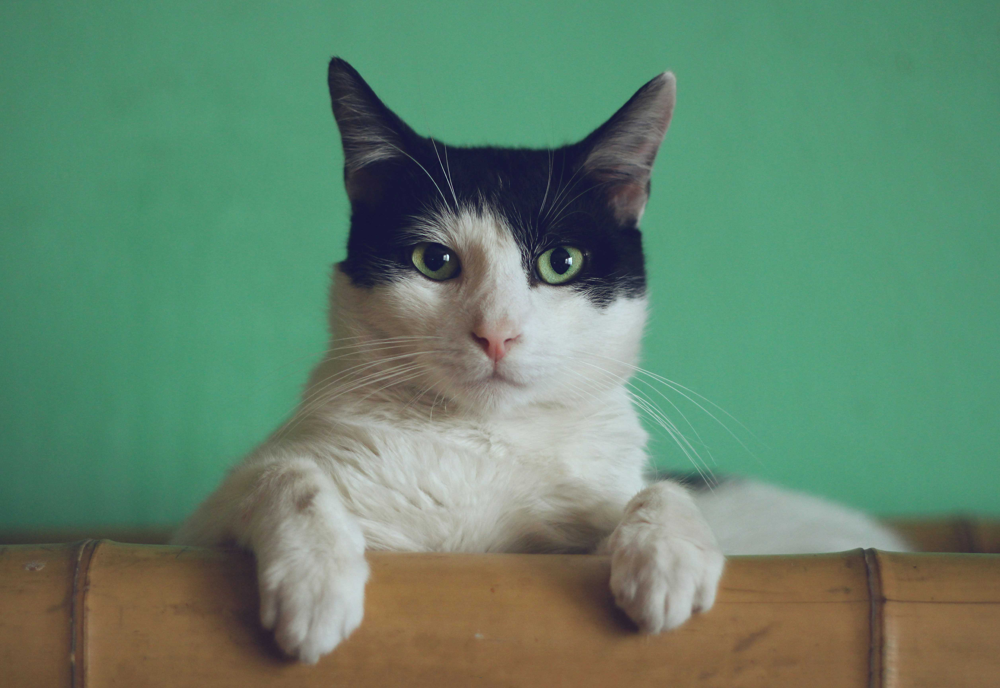
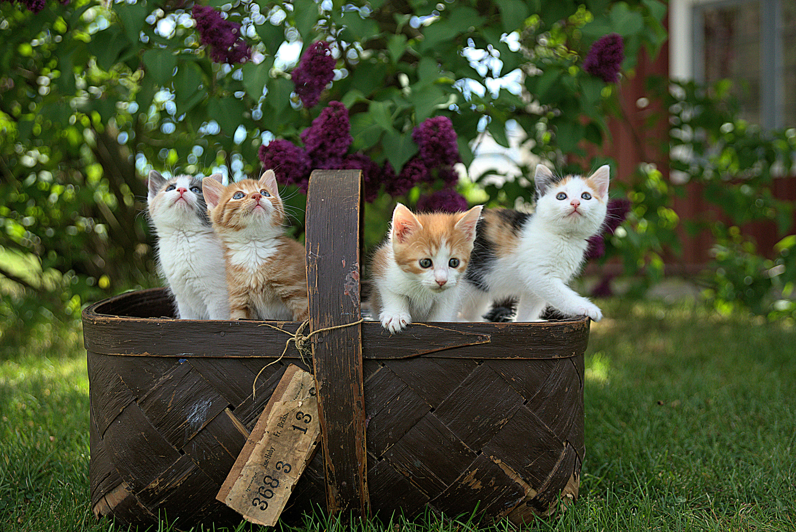
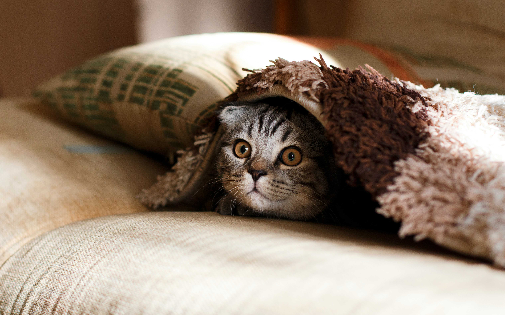
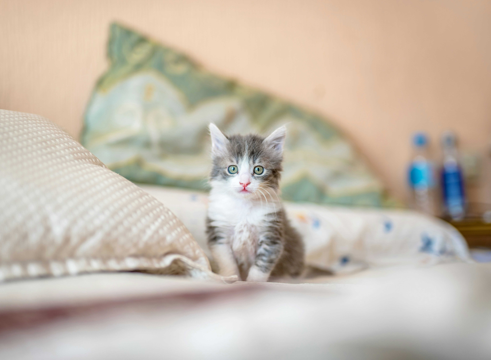

Artigos relacionados

Sábado preguiçoso
Descubra atividades interessantes para fazer com seu pet durante os finais de semana.

Balaio de gatos
Como evitar confusões entre seus gatíneos e acostumá-los desde filhotes.

Cartela de cores
Seu gato é inverno intenso? Verão profundo? Descubra as cores que mais combinam com seu bichano.

Os gatos sentem frio?
Preparem-se para a frente fria que vem para o país da melhor maneira possível..

Conheça o Moacir
Moacir é o gatinho da semana do nosso blog. Venha conhecer sua história de superação.